시스템 설계를 세 단계로 확대해 보기
이 영상은 모바일 앱 시스템 설계에 무엇이 들어가는지, 그리고 면접에서 인기 앱의 설계를 설명하라는 질문을 받았을 때 어떻게 풀어 갈지를 다뤄요. 발표자가 먼저 꺼내는 틀은 '확대 단계'예요. 앱을 새가 내려다보듯 멀리서 본 다음, 점점 가까이 다가가며 더 구체적인 결정을 내려요.
아래 슬라이드에는 세 단계가 번호와 함께 적혀 있어요. 01 High level은 누가 쓰는지, 무엇을 하는지, 비기능 요구사항과 규모예요. 02 Architecture는 외부 서비스, 앱 레이어, 아키텍처 패턴이에요. 03 Tech stack에는 프로토콜, API 설계, DB 스키마, 데이터 정책, 미디어, 보안, 관측성이 몰려 있어요.
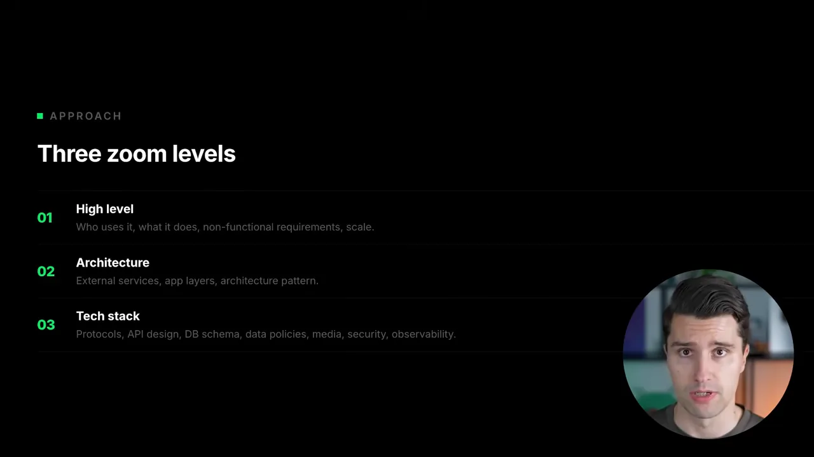
순서가 중요한 이유는 앞 단계의 답이 뒤 단계의 선택지를 줄여 주기 때문이에요. 실시간 통신이 필요한지, 오프라인 퍼스트로 갈지, 캐시를 어디에 둘지는 사용자와 사용 환경을 먼저 알아야 정할 수 있어요. 이 문서도 영상을 따라 이 순서로 내려가요. 앞의 여섯 섹션이 일반론이고, 뒤의 세 섹션이 WhatsApp 사례예요.
누가 쓰고, 무엇을 하는 앱인가
앱을 계획할 때 가장 먼저 던질 질문은 "누구를 위한 앱인가"예요. 슬라이드는 이 질문을 네 갈래로 나눠요. Age range, Region and language, Profession, Context예요. 각 줄 아래 회색 글씨가 예시예요.
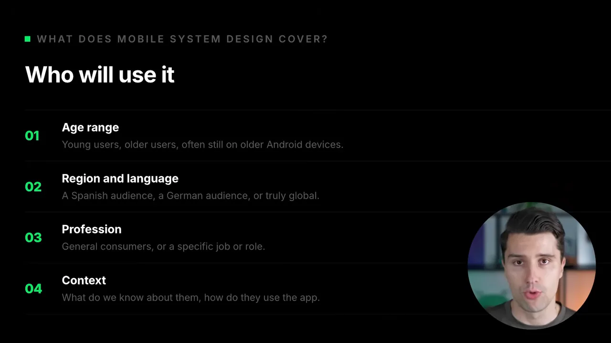
나이를 예로 들면 차이가 분명해요. 사용자층이 나이가 많다면 UX(User Experience) 원칙부터 달라져야 하고, 실수해도 망가지지 않게 훨씬 단순하게 만들어야 해요. 이 사용자들은 최신 플래그십보다 오래된 안드로이드 기기를 쓰는 경우가 많아서, 앱이 지원할 OS(Operating System) 버전도 낮춰 잡아야 해요. 스페인어권만 상대하는지, 전 세계를 상대하는지에 따라 지원 언어가 정해져요. 건축가처럼 특정 직업군을 위한 앱이라면 그 직업에 대해 미리 가정할 수 있는 것들이 생겨요.
무엇을 하는 앱인가
사용자를 알았다면 앱이 하는 일을 기능 단위로 쪼개요. 영상은 소셜 미디어를 예로 들어 프로필, 피드, 팔로우, 친구 목록을 꼽아요. 그리고 기능마다 어떻게 동작해야 하는지를 적어요. "사용자는 프로필 사진을 올리고 사용자 이름을 바꿀 수 있다", "이메일은 다른 사람에게 보이지 않는다" 같은 문장이 기능 요구사항이에요. 구현에 들어가기 전에 앱의 진짜 목표와 기능 목록을 먼저 앉아서 정리하라는 게 발표자의 조언이에요.
비기능 요구사항: 기능이 '어떻게' 동작해야 하나
기능 요구사항이 '무엇을'이라면, 비기능 요구사항은 그 기능이 '어떻게' 동작해야 하는지예요. "앱을 10분 쓸 때 배터리를 몇 퍼센트 이상 쓰면 안 된다"처럼 수치로 정할 수도 있어요. 영상은 이 주제를 화면 가운데 NFR(Non-Functional Requirements) 상자에서 뻗어 나가는 마인드맵으로 보여 줘요. 화면이 옆으로 움직이며 가지를 하나씩 보여 주기 때문에, 한 장에 다 담긴 장면은 없어요. 아래 그림에 여섯 갈래를 모았어요.
각 갈래가 설계를 어떻게 바꾸는지 영상의 예를 따라가 볼게요.
- 배터리: 실시간 연결은 유지하는 데만 전력이 많이 들어요. 그래서 동시에 다섯 개씩 열어 두지 않도록 최적화해야 해요. 백그라운드 작업, 무거운 처리, 미디어도 배터리를 많이 먹어요.
- 네트워크: 사용자가 주로 안정적인 와이파이에서 쓰는지, 기차를 타고 터널을 지나며 인터넷이 끊겼다 붙는 환경에서 쓰는지에 따라 앱 구조가 처음부터 달라져요.
- 메모리: 모바일 기기의 RAM(Random Access Memory)은 넉넉하지 않아요. 큰 파일을 통째로 메모리에 올릴 수 없을 수 있으니, 미디어 업로드를 작은 조각으로 나눠야 할지 따져 봐요.
- 성능: 콜드 스타트 시간, APK 크기, 네트워크 지연에 목표치를 둘 수 있어요. 발표자는 APK 크기도 성능에 넣어요.
- 현지화: 언어만이 아니에요. 아랍어권처럼 오른쪽에서 왼쪽으로 읽는 RTL 레이아웃을 지원해야 할 수도 있어요.
- 규모: 사용자가 몇 명이고 한 사람이 데이터를 얼마나 쓰는지예요. 데이터를 저장하는 쪽은 백엔드라 대부분은 백엔드의 고민이지만, 모바일 설계에도 영향을 줘요.
실제 슬라이드는 아래처럼 생겼어요. 가운데 NFR에서 Memory, Performance, Localization, Scale 가지가 뻗어 있고, Performance 아래에 Cold startup time, APK size, Network latency가 달려 있어요.
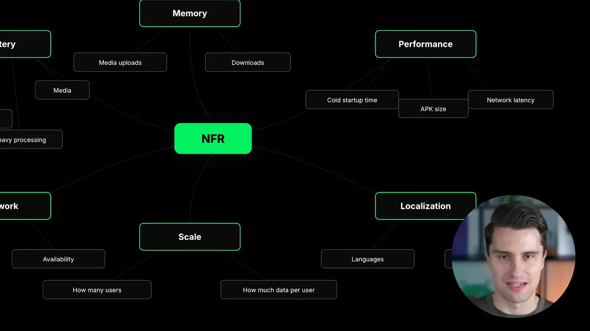
아키텍처, 서버 통신, API 설계
두 번째 확대 단계는 아키텍처예요. 먼저 앱이 어떤 외부 서비스와 이야기해야 하는지 정해요. 슬라이드에는 가운데 External services 상자 주위로 Authentication, Messaging, Analytics, Profile 네 개가 달려 있어요.
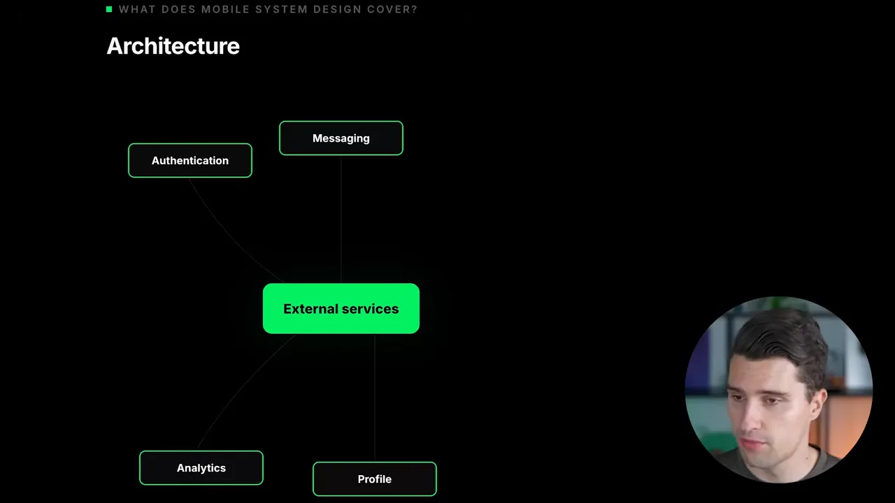
인증은 리프레시 토큰을 쓰는지, 일회용 비밀번호를 쓰는지, 2단계 인증을 하는지까지 구현 전에 정해 둬요. 사용자 행동을 기록할 분석이 필요한지, 프로필 데이터를 따로 가져오는 서버가 있는지도 이 단계에서 따져요.
코드를 어떻게 나눌까
다음은 소스 코드 구조예요. 화면이 오른쪽으로 옮겨 가면 Architecture 상자가 나오고, 그 주위에 MVVM(Model-View-ViewModel) / MVI(Model-View-Intent), Clean architecture, Use cases, Repository pattern이 달려 있어요.
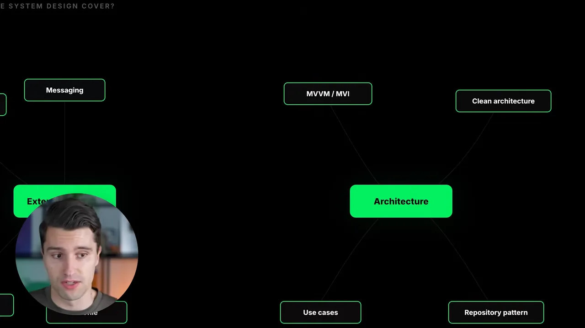
발표자의 기준은 앱이 얼마나 커질지예요. 규모가 작고 코드가 끝없이 늘어날 일이 없는 앱이라면 UI(User Interface) 레이어와 데이터 레이어만으로 단순하게 가도 돼요. 반대로 앱의 미래를 모르고, 크게 성공했을 때를 대비해 탄탄한 기반이 필요하다면 프레젠테이션 레이어에 MVVM이나 MVI를 쓸지, 클린 아키텍처와 유스케이스, 리포지토리 패턴을 쓸지 정해야 해요.
서버와 어떻게 이야기할까
서버와 통신한다고 해서 꼭 REST(Representational State Transfer) 요청을 뜻하는 건 아니에요. 슬라이드의 Server communication 상자에는 REST, WebSockets, SSE(Server-Sent Events)가 차례로 붙고, 조금 뒤 GraphQL이 더해져요.
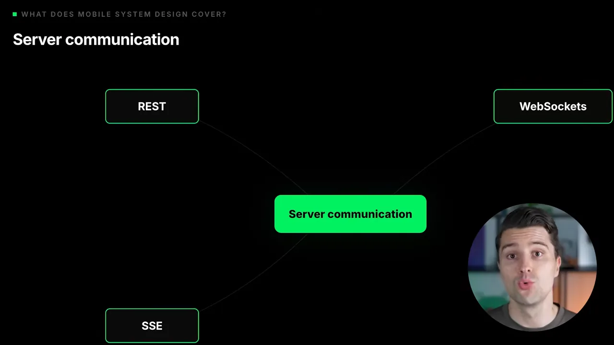
영상이 말한 쓰임새를 표로 정리하면 이래요.
| 방식 | 누가 먼저 말하나 | 영상이 말한 쓰임새 |
|---|---|---|
| REST | 앱이 요청하면 서버가 응답 | 가장 흔한 방식이지만 늘 맞지는 않아요 |
| WebSocket | 앱과 서버 둘 다 | 실시간 연결이 필요할 때. 폴링 대신 써요 |
| SSE | 서버만 | 서버가 이벤트를 알려 주면 앱이 데이터를 새로 고쳐요 |
| GraphQL | 앱이 필요한 필드만 요청 | 응답이 큰데 앱이 일부만 필요할 때 |
발표자가 특히 피하라는 건 폴링이에요. 데이터를 새로 고치려고 while true 루프 안에서 REST 요청을 계속 보내는 방식이죠. 실시간 갱신이 필요하면 서버가 직접 알려 주는 WebSocket이나 SSE를 먼저 생각해요.
API 설계
시스템 설계에는 API 모양도 들어가요. 슬라이드의 예시는 엔드포인트 세 줄이에요. 프로필을 가져오는 GET, 피드를 가져오는 GET, 팔로우하는 POST예요.
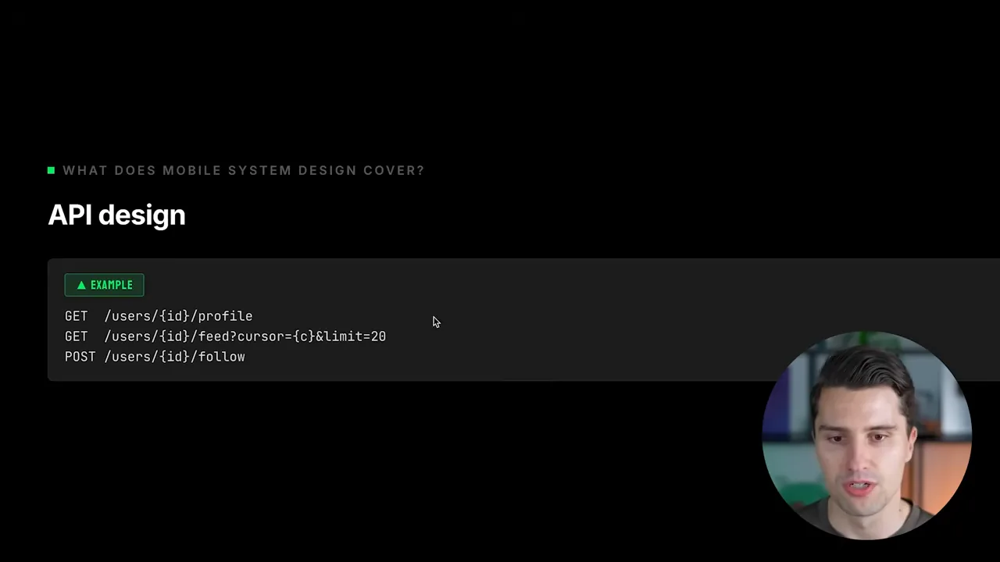
페이지네이션을 쓸지도 설계 단계에서 정해요. 앱이 보여 주는 목록이 아주 길어질 수 있다면 한 번에 다 가져오지 말고 조각으로 나눠 가져오는 편이 좋아요.
데이터: DB 스키마, 오프라인 퍼스트, 미디어
DB 스키마는 테이블과 그 관계를 정하는 일이에요. 영상은 소셜 앱을 예로 users, posts, comments, follows 네 테이블을 그려요. 아래 장면에서 users와 posts 사이 선에 1:N, users와 follows 사이 선에 N:N이 적혀 있어요.
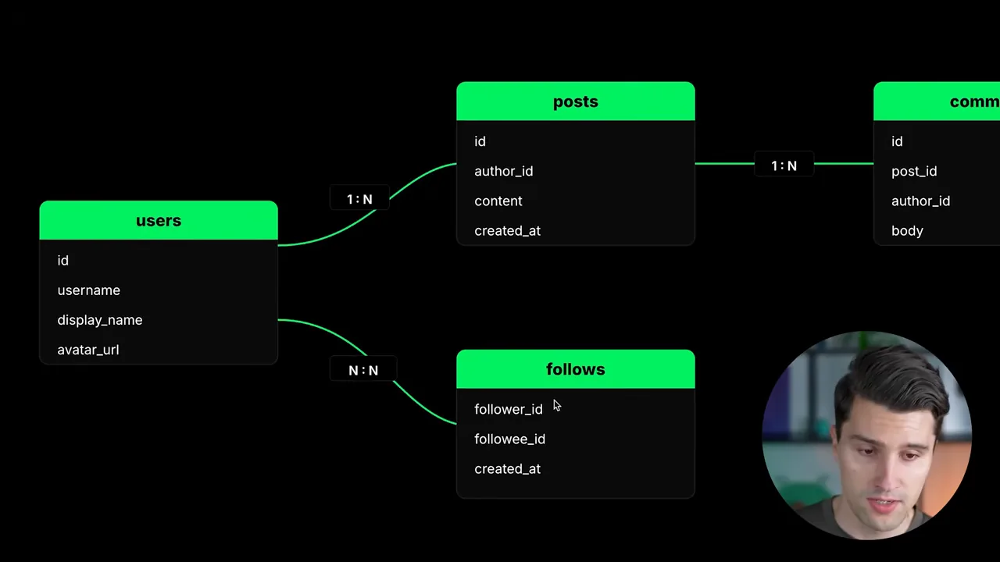
관계를 말로 풀면 이래요. 한 사용자는 글을 몇 개든 쓸 수 있지만, 글 하나는 정확히 한 사용자에게 속해요. 글 하나에는 댓글이 여러 개 달리지만, 댓글 하나는 글 하나에만 속해요(posts와 comments 사이도 1:N이에요). 팔로우는 한 사용자에게 팔로워가 여럿이고, 한 팔로워도 여러 사람을 팔로우해요. 발표자는 이런 규칙을 정하는 것도 시스템 설계라고 해요.
데이터 정책: 오프라인 퍼스트로 갈까
데이터 정책 슬라이드에는 Offline-first, Single source of truth, Synchronization이 붙어 있고, 마지막으로 Conflict resolution이 더해져요.
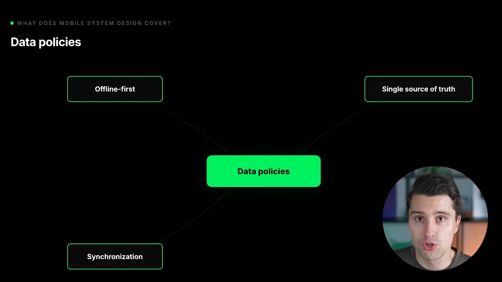
오프라인 퍼스트는 인터넷 없이도 앱을 최대한 자유롭게 둘러볼 수 있게 하는 접근이에요. 복잡도가 많이 늘어요. 대신 로컬 캐시에서 데이터를 바로 보여 주니 네트워크를 기다리지 않아 앱이 전체적으로 빨라지고 사용자 경험도 좋아져요. 그래서 먼저 "이 앱과 사용자층이 그 비용을 감당할 만한가"를 물어요.
구현은 보통 단일 진실 공급원 원칙을 따라요. 화면은 오프라인 캐시만 보고 데이터를 꺼내요. API 호출이나 동기화 작업은 뒤에서 캐시를 채워요. 남는 문제는 두 가지예요. 하나는 동기화예요. 오프라인 메모 앱에서 새 메모를 쓰면, 다시 온라인이 됐을 때 서버로 제대로 올라가야 해요. 다른 하나는 충돌 해결이에요. 두 기기가 오프라인에서 같은 메모를 고친 뒤 함께 온라인이 되면 어느 버전을 남길지 정해야 해요. WhatsApp 편에서 구체적인 해법이 나와요.
미디어
모바일 앱은 대부분 미디어를 다뤄요. 슬라이드의 Media 상자에는 Types, Upload / download, Chunking, Image caching 네 가지가 달려 있어요.
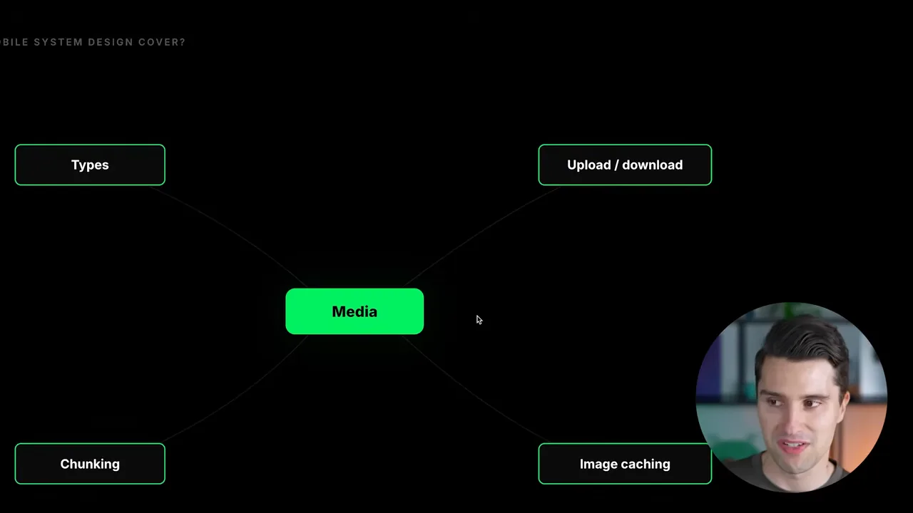
먼저 문서, 영상, 사진 중 어떤 종류를 다루는지 정해요. 그다음 업로드와 다운로드가 있는지, 큰 파일을 조각으로 나눠야 하는지를 봐요. 이미지가 많은 앱이라면 매번 네트워크에서 받지 말고 기기에 캐시해 두는 게 좋아요. 그러면 오프라인에서도 이미지를 보여 줄 수 있어요.
보안과 관측성
보안 슬라이드에는 Security 상자 주위에 Authentication, Networking, Data 세 가지가 있어요.
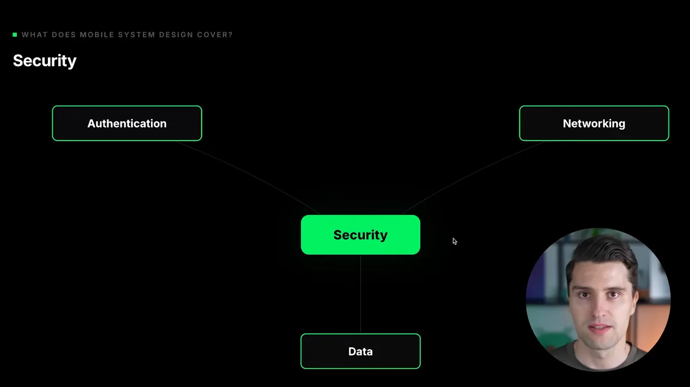
인증 보안은 대부분 백엔드가 책임져요. 그래도 앱 쪽에 남는 몫이 있어요. 토큰을 쓴다면 어디에 저장하고 암호화할지, 다른 민감한 사용자 데이터도 저장해야 하는지예요. 통신은 HTTPS(Hypertext Transfer Protocol Secure)만 써도 기본으로 암호화돼요. 하지만 이때 서버는 오간 내용을 다 볼 수 있어요. 서버가 사용자 비밀번호도, 사용자가 올린 파일 내용도 절대 모르게 하는 제로 놀리지 구조가 요구된다면 인증과 보안 접근이 완전히 달라져요.
배포한 뒤에 무엇을 볼까
Google Play에 앱을 올린 뒤에는 앱이 실제로 어떻게 돌아가는지 관찰해야 해요. 관측성 슬라이드에는 Crash reporting, Analytics, Performance monitoring, Remote config가 있고, 곧 A/B testing이 더해져요.
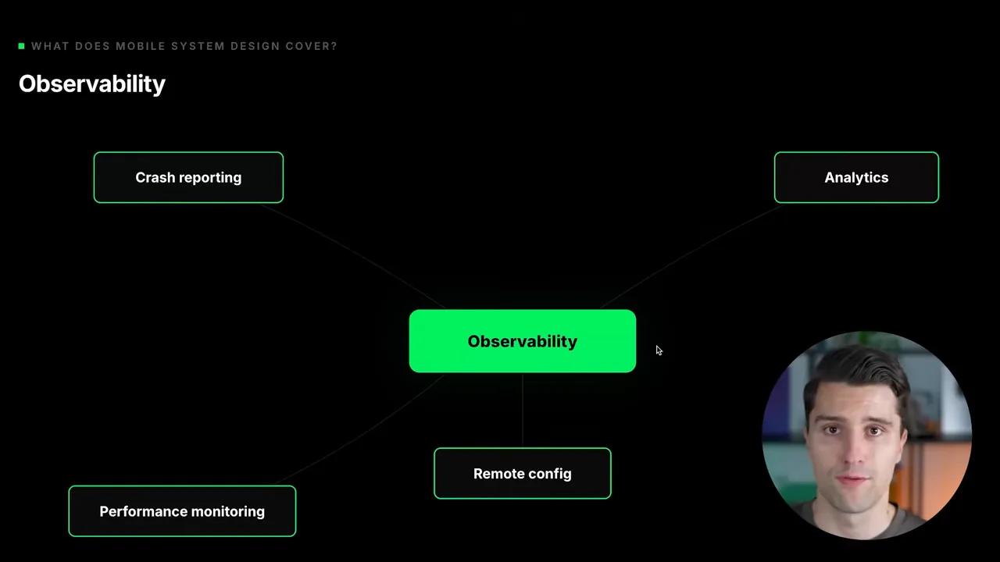
크래시 리포트로는 어떤 기기, 어떤 사용자에게서 앱이 죽는지 알아내요. 분석으로는 사용자가 어느 화면을 자주 찾는지 봐요. 성능 모니터링으로는 평균 콜드 스타트 시간과 서버 요청에 걸리는 평균 시간을 재요. 이를 국가별로 묶으면 특정 국가에서 요청이 유난히 느리다는 것도 알 수 있어요. 리모트 컨피그는 이미 사용자 기기에 깔린 앱의 동작을 원격으로 바꾸는 설정이에요. A/B 테스트는 화면 A와 B를 서로 다른 그룹에 보여 주고 어느 쪽이 더 잘 작동하는지 비교해요.
면접에서 WhatsApp을 설계한다면: 요구사항과 서비스
시스템 설계 면접에서는 인기 앱 하나를 골라 설계를 설명해 보라는 질문이 자주 나와요. 발표자는 여기서 오해를 하나 풀어요. 실제 WhatsApp 구조를 외워서 그대로 재현하라는 게 아니에요. 현실의 설계도 시간이 지나며 계속 바뀌니까요.
the goal of these interviews is that an interviewer just understands that you are able to make solid and well-reasoned decisions
이런 면접의 목표는 지원자가 탄탄하고 근거 있는 결정을 내릴 수 있다는 걸 면접관이 확인하는 거예요.
— 영상 14:53
그래서 면접에서는 떠오르는 생각을 최대한 말로 꺼내고, 면접관을 생각 과정에 끌어들이라고 해요. "이 기능에 캐시를 붙이면 빨라질 수 있다"는 선택지를 떠올리고, 그 앱의 맥락에서 진지하게 따져 보는 모습이 중요해요. 영상은 아래 일곱 주제 순서로 WhatsApp을 함께 설계해 봐요.
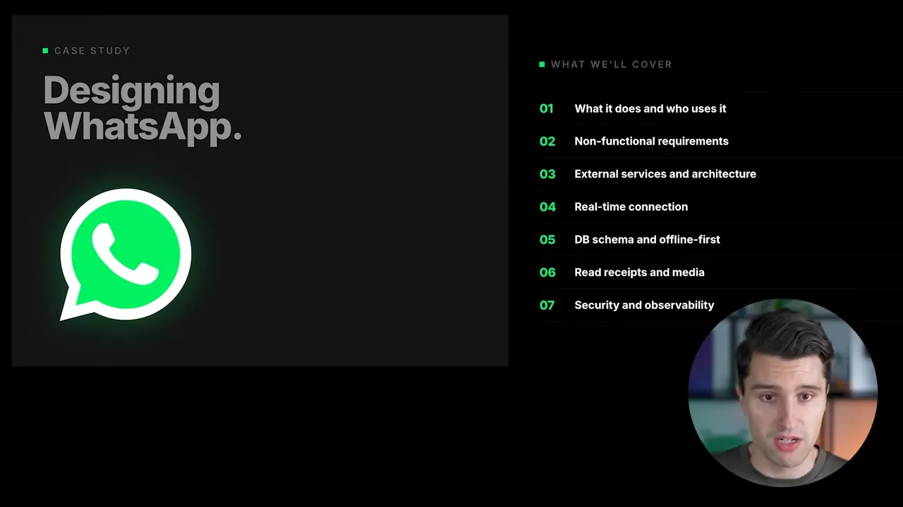
읽음 표시가 따로 있는 이유도 설명해요. 면접에서는 "읽음 표시가 어떻게 동작하는지 말해 보라"처럼 특정 기능을 깊이 파는 질문이 자주 나와요. 겉으로는 사소해 보여도 파고들수록 복잡해지는 기능이기 때문이에요.
무엇을 하고, 누가 쓰나
기능 슬라이드의 첫 줄은 Core: real-time chat이에요. 그 아래 미디어·연락처·위치 공유, 음성 메모, 그룹 채팅이 오고, 마지막 줄에 프로필·스토리·VoIP 영상통화가 '그 밖'으로 묶여 있어요.
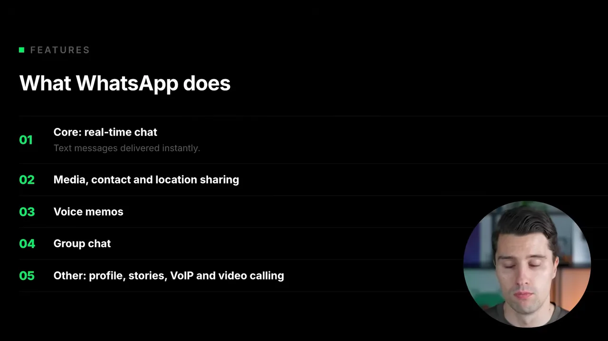
사용자 슬라이드는 두 줄이에요. Anyone with a smartphone(어리든 나이 들었든, 어느 나라든)과 All kinds of phones(아주 오래된 기기부터 플래그십까지)예요.
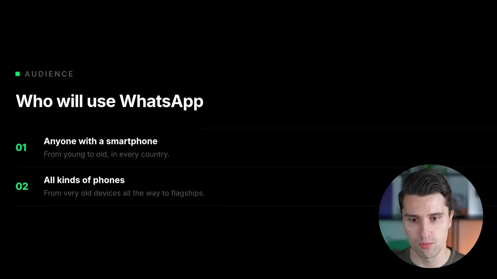
발표자는 중국처럼 인프라가 전혀 다른 예외를 빼면 거의 모든 나라에서 모든 연령대가 WhatsApp을 쓴다고 봐요. 이 가정 하나가 뒤에 나오는 비기능 요구사항을 거의 다 결정해요.
WhatsApp이 견뎌야 할 것
비기능 요구사항 슬라이드는 네 줄이에요. 빠른 메시지 교환, 최소 배터리 사용, 메모리, APK 크기예요. 메모리 줄 아래에는 "1만 개가 넘는 메시지가 쌓인 채팅 목록, 미디어 썸네일, 진행 중인 음성 통화"가 적혀 있어요.
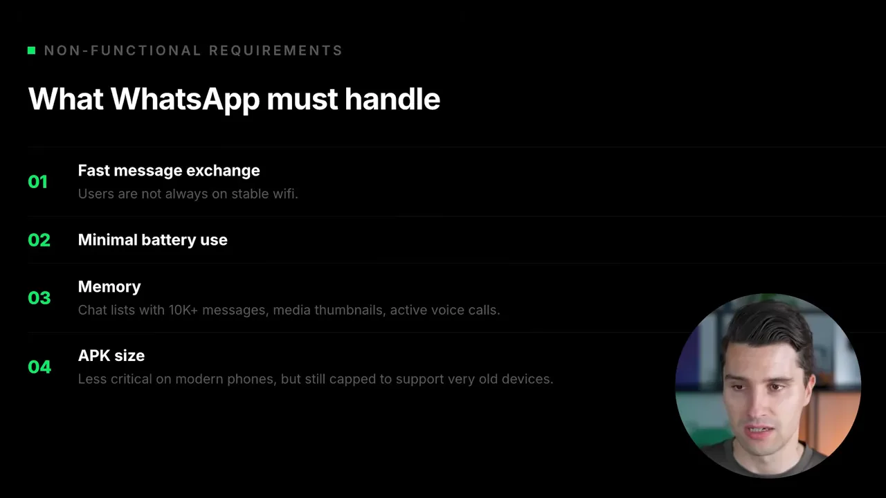
- 빠른 메시지 교환: WhatsApp의 핵심이에요. 사용자가 늘 안정적인 와이파이에 있는 게 아니라 기차나 터널 안에 있을 수 있어요. 아주 느린 연결에서도 메시지가 전달되길 기대해요.
- 최소 배터리 사용: 오래 쓴 폰은 배터리 용량이 줄어 있어요. 하루에도 여러 번 여는 앱이 배터리 사용량 맨 위에 뜨면, 발표자가 기억하는 20억 대 규모까지 퍼지기 어렵다고 해요.
- 메모리: 몇 년 동안 대화한 친구와의 채팅은 메시지가 수만 개예요. 전체를 한 번에 불러오지 말고 페이지네이션을 써요. 이미지는 원본을 받지 않고도 대충 무엇인지 보이는 썸네일을 둬요. 데이터 요금제가 제한된 사용자를 위해서예요.
- APK 크기: 오래된 기기는 저장 공간이 넉넉하지 않아요. 앱이 필요 이상으로 커지지 않게 해요. 전 세계에서 쓰니 거의 모든 언어와 문자도 지원해야 해요.
필요한 서비스
이 정도 규모의 앱은 백엔드 하나에 다 붙이지 않고 마이크로서비스처럼 나눠요. 슬라이드에는 일곱 개 서비스가 한 줄 설명과 함께 정리돼 있어요.
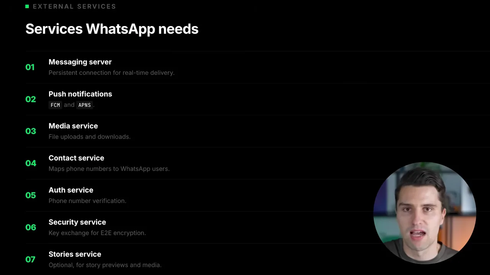
몇 가지는 설명이 더 붙어요. 연락처 서비스는 앱이 기기의 전화번호 목록을 가져와 서버와 비교하고, 그중 WhatsApp에 가입한 번호만 골라 보여 줘요. 이 비교는 백엔드 어딘가에서 해야 해요. 인증은 비밀번호 없이 전화번호 하나로 해요. 일회용 비밀번호로 번호를 확인하고 나면, 다시 인증할 수 있는 한 어느 기기에서든 그 번호를 쓸 수 있어요. 보안 서비스는 종단 간 암호화를 위한 키 교환을 맡아요. 메시지는 서버가 모르는 키로 기기에서 미리 암호화한 뒤 서버로 가요. 서버는 복호화할 키가 없으니 무엇이 오갔는지 알 수 없어요.
WhatsApp의 구조: 레이어, 실시간 연결, 로컬 DB, 오프라인 전송
발표자는 실제 WhatsApp 소스 코드를 본 적이 없다고 먼저 밝혀요. 그래서 여기서부터는 "이런 앱이라면 이렇게 짜겠다"는 추론이에요. 많은 사용자에게 닿고 수십 년 유지될 큰 코드베이스라는 점이 출발점이에요. 슬라이드는 세 가지 결정을 적어 둬요.
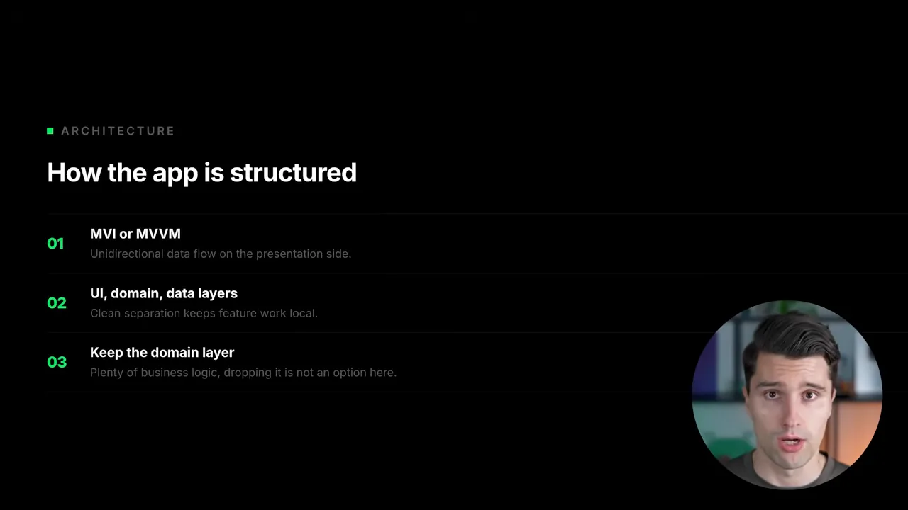
01은 프레젠테이션 쪽에 단방향 데이터 흐름을 쓰는 MVI나 MVVM이에요. 발표자는 MVVM이 안드로이드의 사실상 표준이라고 말해요. 02는 레이어 분리예요. 화면(UI), 채팅 메시지·프로필·사용자 같은 개념과 비즈니스 로직(도메인), 외부 서비스·백엔드와의 통신(데이터)을 나눠요. 안드로이드 OS에 특화된 코드를 위해 인프라 레이어를 네 번째로 두기도 해요.
03은 판단이 들어간 부분이에요. 안드로이드에서 도메인 레이어는 선택 사항이에요. 비즈니스 로직이 대부분 백엔드에 있는 앱이라면 도메인 레이어를 빼서 구조를 단순하게 하는 것도 합리적이에요. 레이어가 적을수록 다루기 쉬우니까요. 다만 WhatsApp처럼 계속 커지는 앱은 앱 안에도 비즈니스 로직이 많아서 도메인 레이어를 두는 게 맞다고 해요.
채팅을 살려 두는 두 가지 길
채팅은 둘 이상이 실시간으로 이어져 있어야 해요. 지금 보고 있는 채팅방만이 아니에요. 채팅 A를 보는 동안 채팅 B에 온 메시지도 받아 두었다가 목록 화면으로 돌아오면 보여 줘야 해요. 아래 슬라이드는 위아래 두 줄로 이 문제를 나눠요.
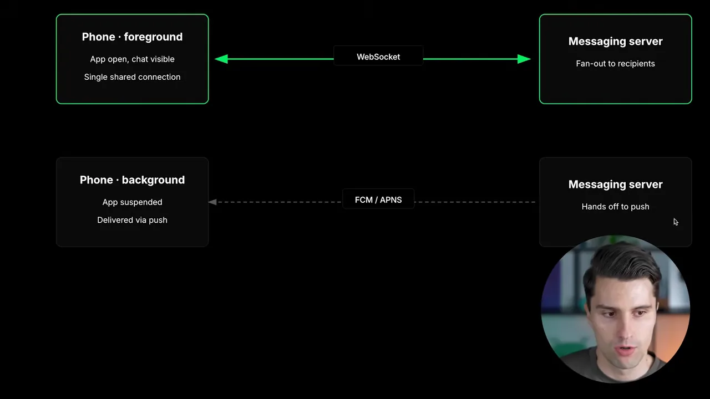
위 줄은 앱이 화면에 떠 있을 때예요. 폰은 서버가 모르는 일(내가 보낸 메시지)을 알려야 하고, 서버는 폰이 모르는 일(남이 보낸 메시지)을 알려야 해요. 양쪽 모두 실시간으로 말해야 하니 WebSocket이 맞아요. 발표자는 WhatsApp이 WebSocket을 바탕으로 한 자체 프로토콜을 쓰는 것으로 안다고 해요. SSE는 서버만 보낼 수 있어서 여기에는 맞지 않아요. 상자 안의 "Single shared connection"은 연결을 하나만 열어 공유한다는 뜻이고, 서버 쪽 "Fan-out to recipients"는 받은 메시지를 받는 사람들에게 퍼뜨린다는 뜻이에요.
아래 줄은 앱이 백그라운드로 갔을 때예요. WebSocket은 앱이 앞에 떠 있거나 적어도 프로세스가 살아 있을 때만 유지돼요. 앱이 종료돼도 사용자는 새 메시지를 알림으로 받길 기대해요. 그래서 메시징 서버가 FCM이나 APNS에 넘기고, 이들이 폰에 푸시를 전달해요.
로컬 DB에 무엇을 둘까
발표자는 실제 스키마가 훨씬 복잡할 거라고 전제해요. 면접에서는 어떤 테이블이 있고 서로 어떻게 이어지는지 떠올릴 수 있으면 충분해요. 슬라이드에는 messages, contacts, shared_media, call_history 네 테이블이 위에 있고, 아래에 stories_cache가 따로 있어요.
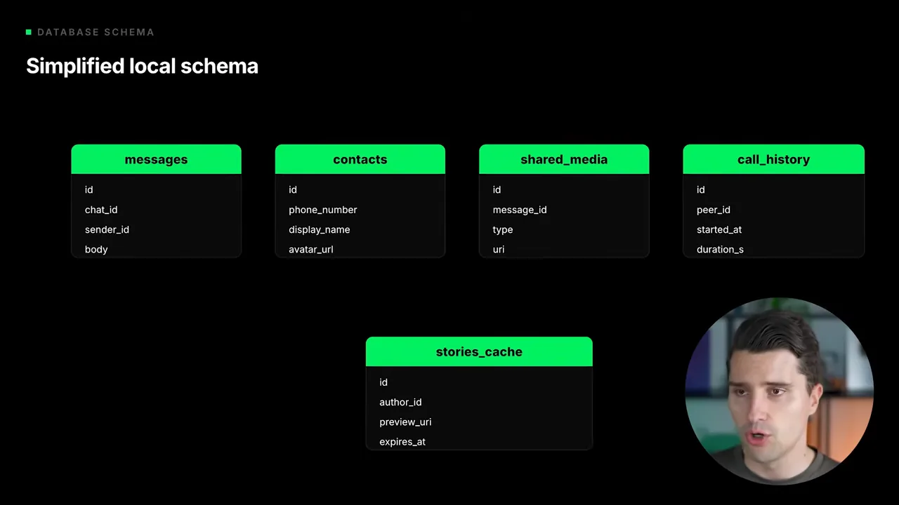
contacts에는 아바타 URL(Uniform Resource Locator), 표시 이름, 전화번호가 들어가요. 공유 미디어는 사진·영상의 참조만 따로 모아 둬요. 통화 기록은 다른 기능의 예로 넣었어요. 흥미로운 건 stories_cache예요. 발표자는 스토리를 온라인 전용 기능으로 봐요. 그래도 오프라인일 때 누가 스토리를 올렸는지는 보여 주는 게 좋아요. 화면이 훨씬 풍성해 보이고, 눌렀을 때 메타데이터가 이미 캐시에 있으니 스토리 사진만 받으면 돼요.
메시지가 사라지지 않게 보내기
WhatsApp은 오프라인에서도 메시지를 볼 수 있어야 하니 오프라인 퍼스트가 맞아요. 슬라이드는 메시지 하나가 거치는 길을 네 칸으로 그려요. Compose → Local cache → Background worker → Delivery예요.
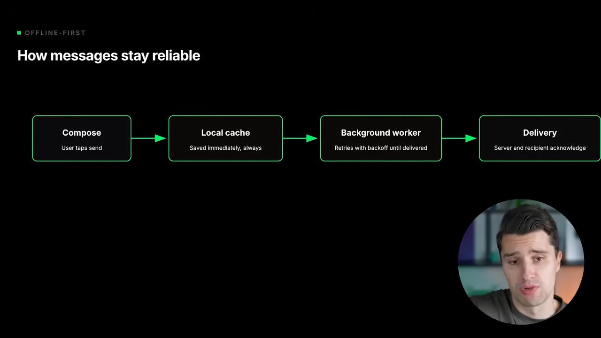
사용자가 전송을 누르는 순간 로컬 캐시부터 고쳐요. 서버가 받았다는 확인이 아직 없어도 메시지는 이미 저장돼 있어요. 발표자는 로컬 캐시를 단일 진실 공급원으로 삼는 이 방식이 오프라인 퍼스트에서 거의 항상 정답이라고 해요. 그다음 안드로이드의 워크 매니저 같은 백그라운드 워커가 전송을 맡아요. 첫 시도에 성공하면 좋지만, 인터넷이 없거나 서버가 내려가 있으면 백오프를 두고 계속 재시도해요. 서버가 받았다고 확인해 주면 체크 표시 하나로 바꾸고, 상대 기기가 받았는지까지 확인하도록 넓힐 수 있어요.
깊이 들어가는 질문: 충돌, 읽음 표시, 미디어, 보안, 관측성
오프라인 전송 흐름 아래에 주황색 테두리 상자가 하나 더 붙어요. "Conflict resolution, last write wins"라는 제목 아래 두 줄 설명이 있어요. 오프라인인 두 기기가 같은 메시지를 고치면 가장 최근 시각의 수정을 남기고, 병합 로직도 서버 왕복도 필요 없는 가장 단순한 전략이라는 내용이에요.
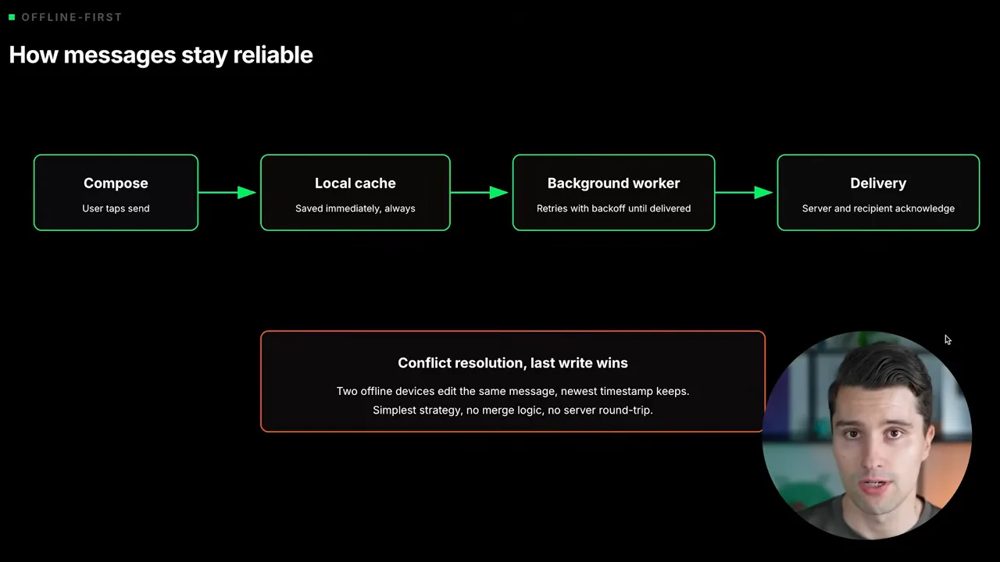
이 전략을 마지막 쓰기 승리라고 불러요. 발표자가 든 예는 이래요. 두 기기 모두 오프라인에서 'hello'라는 메시지를 고쳐요. 기기 A는 오후 4시에 'hello world'로, 기기 B는 오후 5시에 'bye-bye world'로 바꿔요. 두 기기가 온라인이 되어 수정을 서버로 보내면, 서버는 시각을 비교해 더 늦은 5시 쪽을 남겨요.
더 복잡한 전략은 사용자에게 어느 버전을 남길지 고르게 하는 대화상자를 띄우는 거예요. 발표자가 아는 한 WhatsApp은 그렇게 동작하지 않는다고 해요.
메시지는 언제 '읽음'일까
읽음 표시는 면접에서 특정 기능을 깊이 파고들 때 자주 나오는 예시 질문이에요. 이런 질문을 받으면 높은 수준의 개요보다 더 자세히 들어가야 해요. 테이블에 어떤 필드가 있고 어디와 이어지는지, 어떻게 보장하는지까지 말하길 기대한다고 해요. 슬라이드는 체크 표시 세 상태를 위에, 그리고 "언제 읽음으로 칠까"를 정하는 질문 세 개를 아래에 놓아요.
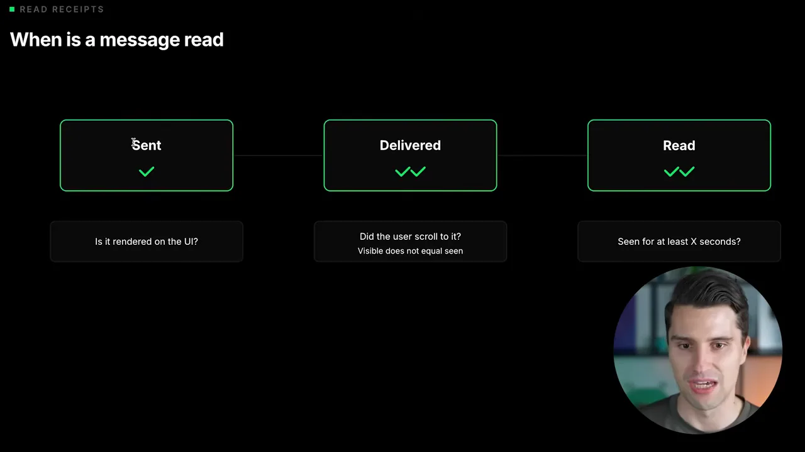
보냄은 서버가 메시지를 받았을 때, 전달됨(체크 둘)은 상대 앱이 받았을 때예요. 남은 건 '읽음'의 기준이에요. 보냈을 때는 당연히 아니에요. 상대 앱이 받았거나 화면에 그렸을 때도 아닐 가능성이 커요. 화면에 그려졌다고 사람이 읽었다는 뜻은 아니니까요. 발표자의 답은 메시지가 목록(안드로이드의 LazyColumn이나 RecyclerView)에서 실제로 보이는 상태로 몇 초 이상 머물렀을 때예요. 사용자가 멈춰서 읽고 있다는 신호라서요. 그래도 상대의 눈을 직접 확인할 수는 없으니 진짜 읽음에 '가장 가까운' 기준일 뿐이에요. 면접관은 이런 차이를 알아차리고 설계 문제로 꺼낼 수 있는지를 본다고 해요.
미디어 옮기기
WhatsApp에서는 어느 채팅에나 사진, 영상, 파일, 문서를 보낼 수 있어요. 미디어 슬라이드는 File cap, Chunking, Resumable uploads를 차례로 붙이고, 마지막에 Thumbnails in payload를 더해요.
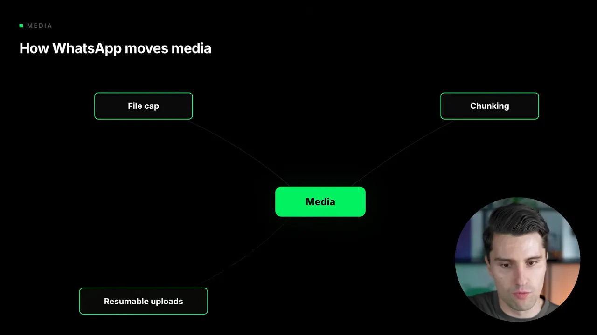
먼저 파일 크기 상한이에요. 상한이 없으면 사람들이 WhatsApp을 공짜 개인 클라우드로 쓸 테니, 발표자는 30~50MB쯤으로 막겠다고 추측해요. 다음은 조각 나누기예요. 50MB 파일을 불안한 연결로 올린다면 조각으로 나눠야 업로드를 멈췄다가 다시 이어 갈 수 있어요. 발표자는 WhatsApp이 실패했을 때 처음부터 다시 올리게 하지 않고 중간부터 이어 주는 데 아주 능하다고 해요.
마지막으로 이미지를 보낼 때 아주 작고 흐린 버전을 메시지 페이로드에 함께 실어요. 받는 쪽은 원본을 받기 전에도 대충 어떤 사진인지 보여 줄 수 있고, 원본은 사용자가 보려 할 때 늦게 받아요.
사용자를 지키는 방법
보안 슬라이드는 네 줄이에요. Auth(전화번호와 SMS(Short Message Service) 일회용 비밀번호, 별도 비밀번호 없음), End-to-end encryption(서버는 평문을 절대 못 봄), Key storage(Android Keystore), Local DB encrypted예요.
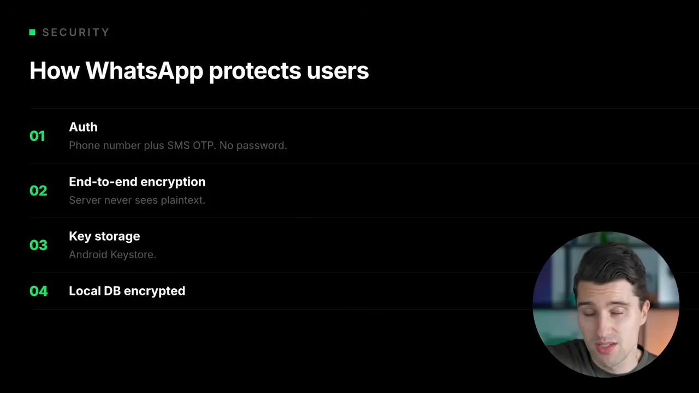
암호화 키를 기기 어디에 둘지에 대해 발표자는 "거의 항상 안드로이드 키스토어"라고 답해요. 안드로이드 기기에서 제대로 보호되는 유일한 곳이라는 이유예요. 로컬 DB 암호화도 WhatsApp이 할 법한 일이라고 봐요. 종단 간 암호화를 하면서 로컬 DB에는 메시지가 평문으로 남아 있다면, 적어도 루팅된 기기에서는 다른 앱이 그 테이블을 쉽게 읽을 수 있으니까요.
무엇을 지켜볼까
관측성 슬라이드도 네 줄이에요. 첫 줄 Crash reporting 아래에 "무엇을 써도 되지만 리포트는 정제해야 한다, 메시지 내용은 안 된다"는 단서가 붙어 있어요.
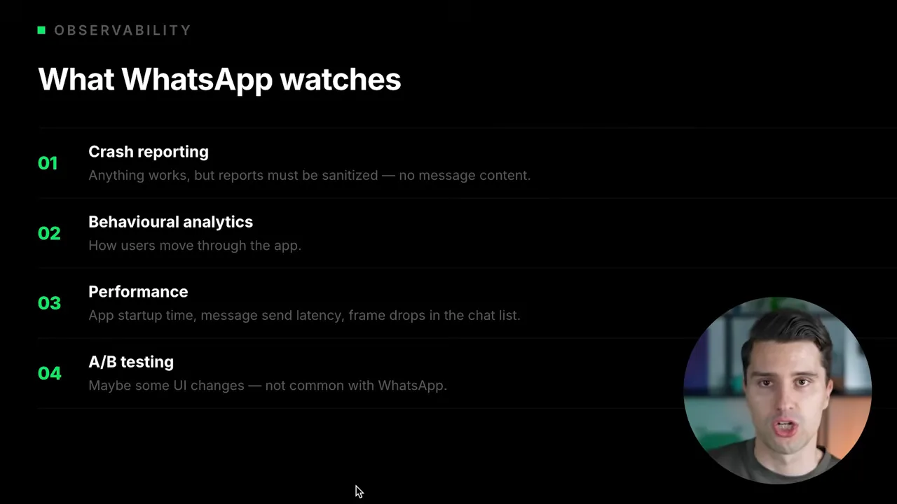
크래시 리포트는 배포한 앱이면 거의 늘 필요해요. WhatsApp만의 추가 조건은 리포트에 메시지 내용이 절대 들어가면 안 된다는 거예요. 오류 메시지에 대화 내용이 섞여 나가면 종단 간 암호화와 제로 놀리지의 취지가 깨져요. 행동 분석은 무슨 메시지를 주고받는지가 아니라 언제, 얼마나 오래 앱을 쓰는지를 봐요. 발표자는 Meta가 이런 분석을 할 가능성이 크다고 봐요. 성능 쪽에서는 앱 시작 시간, 메시지 전송 지연의 중앙값과 튀는 값, 긴 채팅 목록의 프레임 드롭을 재요. A/B 테스트는 WhatsApp보다는 여러 UI 배치를 시험하길 좋아하는 Instagram에서 더 흔하다고 해요.
일반론과 WhatsApp 답안 나란히 보기
앞의 여섯 섹션에서 본 질문 목록에 WhatsApp 사례가 어떻게 답했는지 영상 내용만으로 모으면 이래요.
| 설계 질문 | WhatsApp에서 내린 답 |
|---|---|
| 누가 쓰나 | 스마트폰을 가진 거의 모두. 아주 오래된 기기까지 |
| 비기능 요구사항 | 느린 연결에서도 빠른 전달, 최소 배터리, 페이지네이션과 썸네일, APK 크기 제한 |
| 코드 구조 | MVI·MVVM, UI·도메인·데이터 세 레이어, 도메인 레이어 유지 |
| 서버 통신 | 앞에 떠 있을 때 WebSocket, 백그라운드에서는 FCM·APNS 푸시 |
| 데이터 정책 | 오프라인 퍼스트, 로컬 캐시가 단일 진실 공급원, 백오프 재시도 |
| 충돌 해결 | 마지막 쓰기 승리 |
| 미디어 | 크기 상한, 조각 업로드와 이어 올리기, 페이로드 속 흐린 썸네일 |
| 보안 | 전화번호 인증, 종단 간 암호화, 키스토어, 로컬 DB 암호화 |
| 관측성 | 메시지 내용을 지운 크래시 리포트, 행동 분석, 성능 지표 |
발표자는 이 모든 것을 하나의 예시 답안으로 받아들이라고 해요. 이런 기술적 판단은 결국 앱을 직접 만들어 보는 경험에서 나온다는 말로 사례를 마무리해요.